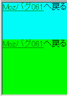

body要素に対してheightプロパティを%値で指定しても無視される。
検証ページ「b061a.html」：
<body style="height:100%; margin:0; padding:0;"> <div style="height:40%; background:aqua;"> <a href="b061.html">Mozバグ061</a>へ戻る（height:40%;） </div> <div style="height:60%; background:lime;"> <a href="b061.html">Mozバグ061</a>へ戻る（height:60%;） </div> </body>
検証ページでは、2つのdiv要素が縦・横とも閲覧領域全体に表示されているはずです。
※ここでは広告が挿入されるのでレイアウトが変わります。
WinIE6.0での表示（標準モード）
N7.02での表示（標準モード）
html要素にheightプロパティを指定することでこの現象を回避できます。
<style type="text/css">
html {
height: 100%;
}
</style>
body要素に対してheightプロパティを%値で指定されたとき、WinIEやOperaは初期コンテナブロック（≒閲覧領域）の高さに対する%値を算出します。一方、Mozilla/Netscapeはhtml要素の高さに対する%値を算出します。このときhtml要素の高さを明示していなければ、body要素に対するheightプロパティの%値指定は height:auto; として扱われます。
body要素に対してheightプロパティを%値で指定したとき、WinIEおよびOperaには閲覧領域の高さに対する%値を算出します。一方、Mozilla/Netscapeはhtml要素の高さに対する%値を算出します。また、Mozilla/Netscapeはhtml要素に対してheightプロパティを%値で指定したとき、閲覧領域の高さに対する%値を算出します。このような実装の違いから、Mozilla/NetscapeではWinIEで有効な方法でボックスの高さを調節できない現象が発生します。
CSS2の「ユーザエージェントはルート要素のheightプロパティを%値で指定したときは閲覧領域の高さに対する値を算出することがある」という表現から、WinIEやOperaはbody要素をルート要素にしているのに対し、Mozilla/Netscapeはhtml要素をルート要素にしているためにこのような違いが発生します。と考えることができます。ただし、これはheightプロパティの算出という条件下で考えられるものであり、HTML/XHTMLパーサが解釈する木構造上のルート要素とは一致しない可能性があります。
なお、WinIE6, Mozilla, Opera7ともに互換モードではheightプロパティの%値指定についてCSS2の規定と異なる解釈を行っています。body要素の子要素のheightプロパティを%値で指定した場合、親要素のheightプロパティの高さを明示していないときは閲覧領域の高さに対する%値を算出します。
N7.02、Moz1.4RC2でこの現象の発生を確認しました。